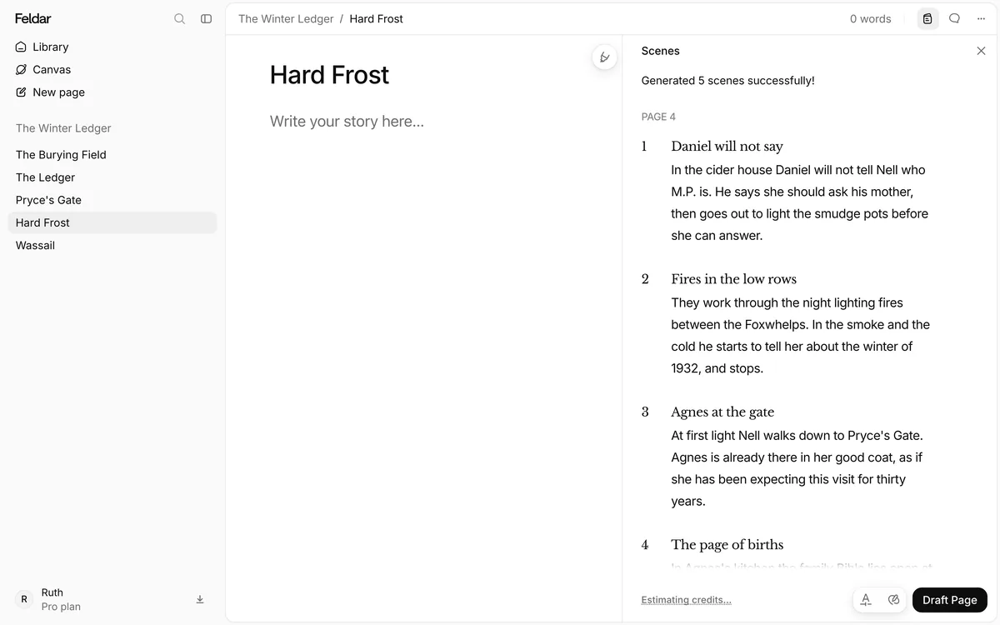

About 370 BCE, on writing itself
It will make people forgetful
In Plato's Phaedrus, Socrates tells of a king who warned that writing would weaken memory. Plato wrote the warning down.
Feldar, a writing app for novelists
Clay, papyrus, parchment, type, keys, screens. Each one changed how a book gets made, and left the writing to the writer. Feldar is the newest in the line. It plans, drafts and revises with you, in blue, and nothing stays unless you accept it.
Free to start. 500 credits, no credit card.
about 3300 BCE
Sumer, southern Mesopotamia
Marks that outlast the speaker.
The first writing we know of was pressed into wet clay with a reed. The earliest tablets are accounts: grain, beer, livestock. The stories followed. The Epic of Gilgamesh survives on clay tablets.
I have a story to tell
about 2500 BCE
Egypt
Room for something long.
Sheets of papyrus were pasted end to end into rolls and written on with a reed pen. A text could now run for as long as it needed to.
I have a story to tell.
about 1200
A scriptorium in Europe
Pages to turn, and margins to argue in.
Bound pages had replaced the scroll, and readers wrote back in the margins. Those notes are called glosses. Scribes added their own: complaints about the cold, and the occasional snail.
Here begins
I have a story to tell.
who is telling?
about 1450
Mainz
The same book in many hands.
Gutenberg's press set a page in metal type and printed it again and again. A book no longer had to be copied out to be read somewhere else.
I have a story to tell.
1874
A desk with good light
A draft that keeps up with a thought.
The first commercially successful typewriter went on sale in 1874, and its QWERTY layout is still under your fingers. A mistake still meant typing the page again.
I have a story to tell.
about 1978
A desk with a power socket
Revision without retyping.
Word processors reached writers' desks in the late 1970s. Cut, paste and undo made a draft something to reshape, not something to type again.
STORY.TXTLn 1 Col 24INSERT
I have a story to tell.
A document for the chapter. An outline in a notes app. A spreadsheet of characters. A chat window for ideas, and a grammar checker in another tab. The tools multiplied, and the story got scattered between them.
Feldar puts them back on one page.
Today
Your desk
Help when you ask, in a colour that isn't yours.
Feldar plans, drafts and revises with you. What it writes arrives in blue and waits. Accept it, ask for another take with Revise, or Dismiss it. The sentence is still yours to finish.
Start writing freeThe Winter LedgerChapter One
I have a story to tell. It begins with a ledger, and two pounds paid on the first of every month to someone called M.P. It starts in a hard winter, with a dead man's ledger and a debt nobody will explain. It is about an orchard, a daughter who came home, and a column of sums that never missed a month.
Demo. These words were written by hand for this page. In Feldar they come from your book.
What five thousand years of writing tools worked out, and where each one lives in Feldar.
From clay: marks that last
A private record of which words you typed and which came through Feldar, with the days and hours you worked.
From the roll: room for something long
Plan a chapter as scenes, then write it yourself or ask for a first pass at the length you set.
From the margin: someone to argue with
Six readers beside your page, and five editing passes that mark what they find with a fix to accept or discard.
From the press: copies
Every book on one shelf. Bring a manuscript in, or take it out, as Word, PDF, Markdown or plain text.
From the typewriter: keeping up
When the next line will not come, ask at the caret. The lines arrive in blue, in the voice of your own pages.
From the word processor: revision
Select a passage and ask for a rewrite, or say what you want with Instruct. Every added word comes back marked.
And one thing none of them had
A board of linked cards for your characters, places, objects and plot beats. It sits beside the page, and Feldar reads it before it writes.
Also in the workspace: Voice & Style, which takes a sample of your prose, and a choice of six models from GPT-6 and Claude 5.5. All features
The real app, with one novel running through every shot: The Winter Ledger.


They were right to ask. The answer was always in what the tool left to the writer.
About 370 BCE, on writing itself
In Plato's Phaedrus, Socrates tells of a king who warned that writing would weaken memory. Plato wrote the warning down.
1492, on the printing press
The abbot Johannes Trithemius wrote In Praise of Scribes to defend copying by hand. He had it printed.
1882, on the typewriter
Nietzsche, typing on an early machine, wrote: "Our writing tools are also working on our thoughts."
Every plan has the same workspace. Writing, planning and organizing never use credits.
Free
500 credits to try everything. No credit card.
Start writing free$20 a month
20,000 credits a month for regular drafting and revision.
$40 a month
45,000 credits a month, and more premium model use.
$200 a month
250,000 credits a month for large manuscripts.
Plans in full Coming from another tool? Scrivener Sudowrite Novelcrafter Plottr All comparisons
No. It writes when you ask, in blue or in a card, and nothing stays until you accept it.
No. Your manuscript never trains AI models, and what you write in Feldar is yours.
To start, yes. Starter is free with 500 credits and no credit card. Writing, planning and organizing never use credits. Paid plans start at $20 a month.
Yes, as a Word, PDF, Markdown or plain-text file of up to 20 MB.
In the browser, yes. The desktop app is for Mac only for now.
Yes. Export the whole book or chosen pages as Word, PDF, Markdown or plain text.
Five thousand years of writers got here before you. The page is open.
Free to start. 500 credits, no credit card.